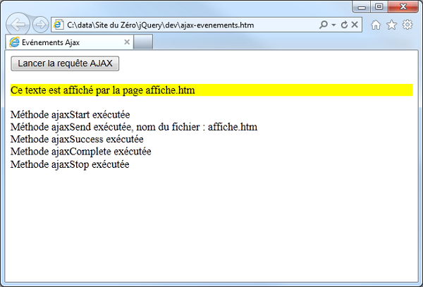
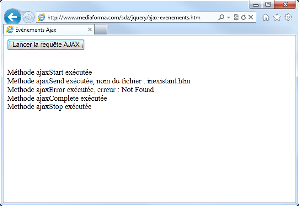

Arrivés à ce point dans la lecture du cours, vous savez mettre à jour une partie d'une page Web en utilisant la méthode load(). Nous allons maintenant nous intéresser à des fonctions jQuery complémentaires.
Les méthodes se différencient des fonctions, car elles s'appliquent à des éléments obtenus à travers un sélecteur jQuery. Dans $('sélecteur').meth(paramètres);, meth est une méthode, alors que dans $.fonc(paramètres);, fonc est une fonction.
I./ Charger un script et des données JSON
1.) La fonction $.getScript() permet de charger (de façon asynchrone) puis d'exécuter un fichier JavaScript. Dans sa syntaxe la plus simple,
il suffit de préciser l'adresse URL du fichier à charger :
$.getScript('adresse');
Dans la 2e syntaxe, une fonction de retour est précisée en 2 paramètre de la fonction. Cette fonction est exécutée lorsque le code JavaScript a été chargé et
exécuté :
$.getScript('adresse', function() {
// Code
});
2.) Charger des données codées en JSON
JSON (JavaScript Object Notation) est un format de données textuel qui permet de représenter des informations structurées. Voici un exemple de données JSON :
{
'menu': 'Fichier',
'commande': [
{
'nomCde': 'Nouveau',
'action':'CreateDoc'
},
{
'nomCde': 'Ouvrir',
'action': 'OpenDoc'
},
{
'nomCde': 'Enregistrer sous',
'action': 'SaveAs'
},
{
'nomCde': 'Fermer',
'action': 'CloseDoc'
}
]
}
Pour bien comprendre comment accéder aux données d'un fichier codé en JSON, je vais raisonner sur un exemple simple qui comporte quatre
paires 'nom':'valeur' de même valeur :
{
"nom": "Pierre Durand",
"age": "27",
"ville": "Paris",
"domaine": "HTML5, CSS3, JavaScript"
}
Et voici le code HTML/jQuery utilisé pour manipuler ces données :
Réf Exemple 1
II./ La fonction $.ajax()
Tout comme les méthodes et fonctions AJAX étudiées jusqu'ici, $.ajax() permet d'envoyer des requêtes HTTP AJAX à un serveur Web. Ce qui
la différencie de ses "collègues", c'est la finesse des paramètres qui peuvent lui être communiqués.
Deux syntaxes sont possibles :
$.ajax(adresse, { options });
$.ajax({ options });
...où :
- adresse est l'adresse à laquelle la requête doit être envoyée, et options correspond à une ou plusieurs des options
suivantes :
=> type : type de la requête, GET ou POST (GET par défaut)
=> url : adresse à laquelle la requête doit être envoyée
=> data : données à envoyer au serveur
=> dataType : type de données qui doivent être retournées par le serveur : xml, html, script, json, text
=> success : fonction à appeler si la fonction aboutit
=> error : fonction à appeler si la requête n'aboutit pas
=> complete : fonction de rappel à appeler lorsque l'appel AJAX se termine
=> timeout : délai maximum (en millisecondes) pour que la requête soit exécutée. Si ce délai est dépassé, la fonction spécifiée dans
le paramètre error sera exécutée.
Voici comment on passe les paramètres que ce soit pour la méthode POST ou GET :
$.ajax({
url: 'cible.php',
type: 'POST',
data: 'param1=voila¶m2=voilavoila',
dateType: 'html'
});
Bcp d'autres options peuvent être utilisées. Pour en avoir une liste exhaustive, je peux consulter la documentation
officielle.
Je reprends l'exemple du chapitre précédent pour remplace $.get() par $.ajax(). Voici le code utilisé :
Réf Exemple 2
Complément:
Les fonctions de rappel, que ce soit celle de success, error ou complete, acceptent toutes les trois
des paramètres :
Les paramètres de la fonction du paramètre success :
- la réponse renvoyée par le serveur
- le statut, ie une chaîne de caractères automatiquement générée par jQuery pour me donner le statut de ma requête
Les paramètres de la fonction du paramètre error :
- l'objet XMLHttpRequest renvoyé par jQuery
- le statut
- le texte qui sera passé en argument de l'exception levée, ie le texte qui sera affiché au visiteur et lui expliquant l'erreur
Les paramètres de la fonction du paramètre complete :
- l'objet XMLHttpRequest renvoyé par jQuery
- le statut
Un exemple pour écaircir tout cela :
$('#more_comm').click(function() {
$.ajax({
url: 'more_com.php',
type: 'GET',
dataType: 'html',
success: function(code_html, statut) {
$(code_html).appendTo('#commentares'); // Je passe code_html à jQuery() qui va me créer l'arbre DOM
},
error: function(resultat, statut, erreur) {
},
complete: function(resultat, statut) {
}
});
});
III./ Evénements associés à une requête AJAX
Dans la section précédente, j'ai vu la fonction success() pour exécuter du code lorsqu'une requête AJAX a abouti, et la fonction
error() pour exécuter du code lorsqu'une requête AJAX n'a pas abouti. Dans cette section, je vais découvrir une autre technique permettant
d'exécuter du code à différentes étapes de l'exécution d'une requête AJAX. Cette technique repose sur la mise en place de méthodes de gestion événementielle. Le
tableau suivant donne un aperçu des méthodes utilisables :
___________________________________________________________________________________________________________________________________________________________________
-------------------------------------------------------------------------------------------------------------------------------------------------------------------
MéTHODE | EVENEMENT
-------------------------------------------------------------------------------------------------------------------------------------------------------------------
$(document).ajaxSend(function(ev, req, options)) | Requête sur le point d'être envoyée
-------------------------------------------------------------------------------------------------------------------------------------------------------------------
$(document).ajaxStart(function()) | Début d'exécution de la requête
-------------------------------------------------------------------------------------------------------------------------------------------------------------------
$(document).ajaxStop(function()) | Fin de la requête
-------------------------------------------------------------------------------------------------------------------------------------------------------------------
$(document).ajaxSuccess(function(ev, req, options)) | La requête a abouti
-------------------------------------------------------------------------------------------------------------------------------------------------------------------
$(document).ajaxComplete(function(ev, req, options)) | La requête est terminée
-------------------------------------------------------------------------------------------------------------------------------------------------------------------
$(document).ajaxError(function(ev, req, options, erreur)) | La requête n'a pas abouti
___________________________________________________________________________________________________________________________________________________________________
-------------------------------------------------------------------------------------------------------------------------------------------------------------------
...où :
- ev représente l'événement
- req représente la requête
- options contient les paramètres passés à la requête
- erreur est le nom de l'erreur détectée par jQuery
Réf Exemple 3
Il est intéressant de noter, grâce à la figure suivante, l'ordre de déclenchement des événements :

Cette exécution montre l'ordre dans lequel sont levés les événements en rapport avec la requête AJAX
Et si je modifie le nom du fichier pour faire référence à un fichier inexistant :
$('#donnees').load('inexistant.htm');
Par conséquent, l'exécution d'événements sera légèrement différente :

Le fichier inexistant.htm n'a pas été trouvé, ce qui a déclenché l'événement ajaxError